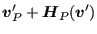
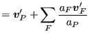
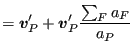

The field architecture discussed here applies to centrifugal loads and gravity loads. Consequently, it is used for the *DLOAD card with the following labels:
The two-dimensional integer field ibody contains three columns and as many rows as there are body loads. Its first column contains a code identifying the kind of load:
Its second column contains the number of the amplitude to be applied, if any. The third column contains the load case. This is only important for steady state dynamics calculations with harmonic loading. The default values is 1 and means that the loading is real (in-phase); if the value is 2 the loading is imaginary (out-of-phase). The element number or element set, for which the load is defined is stored in the one-dimensional character field cbody. It contains as many entries as there are body loads. The nominal value of the body load is stored in the first column of field xbody. This is a two-dimensional field containing 7 columns and as many rows as there are body loads. The second to fourth column is used to store a point on the centrifugal axis for centrifugal loads and the normalized gravity vector for gravity loading. If the gravity vector is not known and has to be determined by the mass distribution in the structure (also called generalized gravity) columns two to seven remain undefined. This also applies to columns five to seven for non-generalized gravity loading. For centrifugal loading columns five to seven of field xbody contain a normalized vector on the centrifugal axis.
Based on the actual time the actual body load is calculated from the nominal value and the amplitude, if any. It is stored in the first column of field xbodyact. Columns two to seven of xbodyact are identical to the corresponding columns of xbody.
The body loads are not stored in the order in which they are defined in the input deck. Rather, they are ordered in alphabetical order according to the element number or element set name they apply to. An element number is interpreted as a character.
As an example, assume the following body loads:
*DLOAD Eall,CENTRIF,1.E8,0.,0.,0.,1.,0.,0. 8,GRAV,9810.,0.,0.,-1. E1,NEWTON
then the loading fields will look like:
| ibody cbody | (518) |
| xbody | (519) |